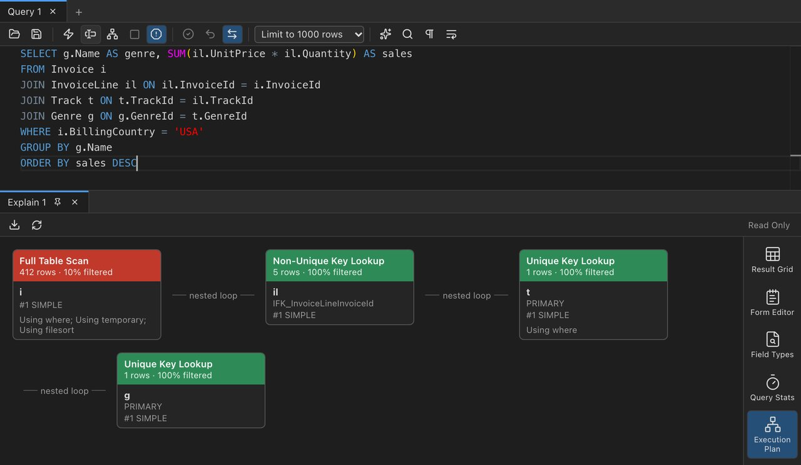
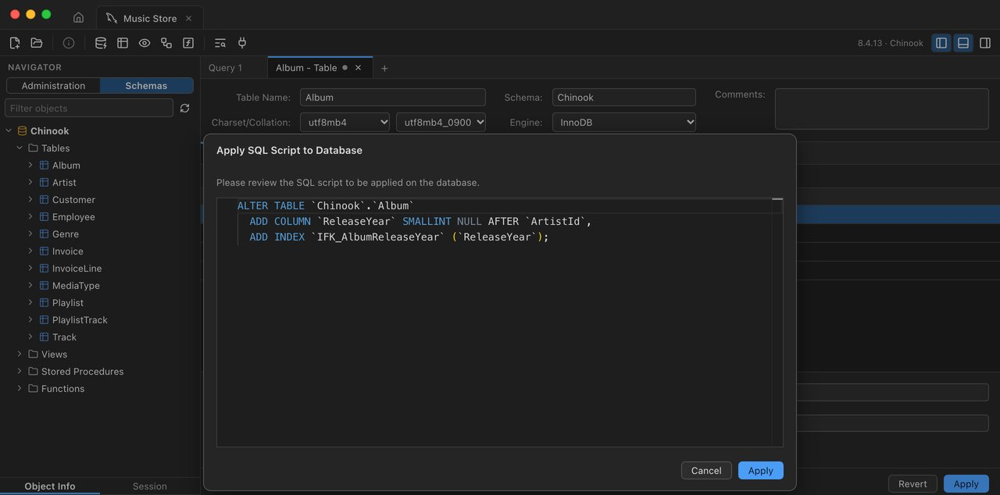

Works with
- MySQL
- MariaDB
- PostgreSQL
- SQL Server
- SQLite
Runs on
- macOS12 or later, Apple Silicon and Intel
- Windows10 and 11, from the Microsoft Store or an installer
- Linuxx64, as .deb or AppImage
What it does
-
SQL editor
Completion of schemas, tables and columns, through aliases too. Formatting, find and replace, snippets.
-
Results you can edit
A fast grid for hundreds of thousands of rows. Every change is shown as SQL before it is applied.
-
Execution plans
The plan of a query drawn as a diagram, to see why it is slow.
-
Table and object editors
Columns, indexes, foreign keys, triggers, views and routines. A change becomes the smallest
ALTER TABLE. -
Server administration
Live status charts, sessions, variables, users and privileges, backup and restore. Alignment of one schema to another, from the app or the command line.
-
Import and export
Results to CSV, JSON, SQL, HTML and Excel. CSV files and spreadsheets into a table.
-
Files as connections
SQLite databases and CSV files open like a server, SQLite files on another machine too, over SSH. A CSV file is saved in its own format.
-
Safe by default
UPDATEandDELETEwithoutWHEREare refused, production connections are marked, open transactions are confirmed.
Up close
Edit results in the grid
Change cells, add and delete rows right in the results. Before anything reaches the server, DBKnife shows the UPDATE, INSERT and DELETE it will run, and applies them together.
See why a query is slow
Explain draws the execution plan as a diagram: the tables read, how they are joined and the rows each step expects, on every database.

Change tables safely
Columns, indexes, foreign keys and triggers in one editor. Apply shows the smallest ALTER TABLE that makes the change, to read before it runs.

Watch the server
Live charts of connections, network traffic, queries per second and buffer pool. Client sessions, variables and users are one click away.
What each database gets
| MySQL, MariaDB | PostgreSQL | SQL Server 2017+ | SQLite | |
|---|---|---|---|---|
| SQL editor, results, grid editing | Yes | Yes | Yes, with GO batches | Yes |
| Visual execution plan | Yes | Yes | Yes | Yes |
| Table, view and routine editors | Yes | Yes | Yes | Yes |
| Server status, sessions, variables | Yes | Yes | Yes | No |
| Users and privileges | Yes | Roles | Logins, users, roles | No |
| Backup and restore | mysqldump | pg_dump | .bacpac, .bak | No |
| Also | Copy Database, Alignment | Sequences, types, extensions | SQL Server Agent jobs (read-only) | Files on another machine over SSH |
Backup and restore use the database's own command-line tools, which have to be installed. Connections can go through SSH tunnels and SSL. Saved alignments also run from the command line, for cron or a script: dbknife --runjob <name> on macOS and Linux.
Download
| System | Download | Updates |
|---|---|---|
| macOS 12 or later | Apple Silicon, Intel | Automatic |
| Windows 10 and 11 beta | Microsoft Store, installer for x64 | Automatic from the Store; with the installer, download the new version |
| Linux x64 beta | .deb for Debian and Ubuntu, AppImage for other distributions | Download the new version |
- macOS: open the
.dmgand drag DBKnife to Applications. The app is signed and notarized by Apple, and updates itself. - Windows: the installer is not signed yet, so SmartScreen shows "Windows protected your PC": choose More info, then Run anyway. The Microsoft Store version has no warning.
- Linux: make the AppImage executable before the first start (Properties, Allow executing as program, or
chmod +x). - Beta: DBKnife is developed and used every day on macOS. The Windows and Linux versions come from the same code, but have been tried much less.
All versions and their changes are on the releases page. English and Italian are built in; other languages can be added as language packs.